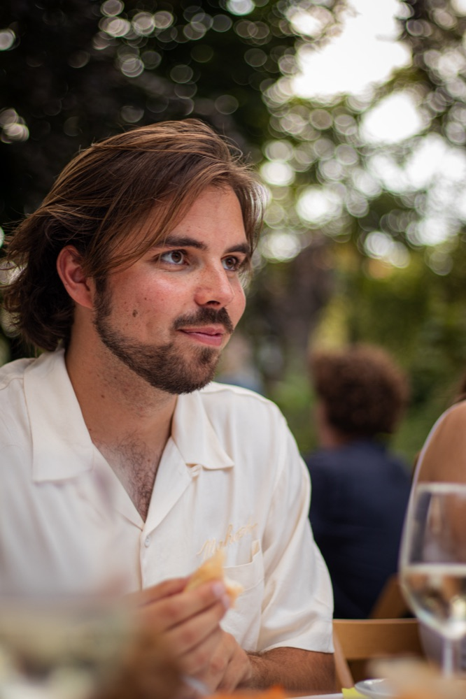

Begeleiding
Individuele bèta-begeleiding voor hoogbegaafde denkers
Begeleiding voor leerlingen in het voortgezet onderwijs, één op één. Gericht op bèta-vakken — natuurkunde, wiskunde — en op het denken dat daarbij hoort. Voor denkers die worstelen met het middelbare schoolsysteem. Wat ik aanbied is: vervanging voor de thuiszitters, ondersteuning voor wie moeite heeft met door hoepels springen en extra uitdaging voor wie zich verveelt. Met als doel om de passie voor de leerstof weer terug te vinden.
Leerlingen in het voortgezet onderwijs. Voor jongere leerlingen zijn in overleg uitzonderingen mogelijk.
Ik ben Matthijs Odding, 24 jaar, natuurkundige (BSc Technische Natuurkunde aan de TU Delft, minor filosofie) en schrijver. Ik ben een vrijwilliger als begeleider bij een plusklas en homeschool teacher in Australië geweest. Op dit moment werk ik als bijlesdocent en eindexamentrainer. Daarnaast schrijf ik filosofisch werk over aandacht en perspectief. Dit is te lezen op de schrijverspagina.
Tijdens mijn studietijd had ik twee kleine bedrijven naast mijn studie. Met een groepje studenten bouwde ik een algoritme dat statistische arbitrages vond bij bookmakers. Later gaf ik trainingen in AI-prompting. Voor mijn bachelorscriptie rekende ik aan een coëfficiënt van een kernreactor — een onderwerp dat normaal pas in de master aan bod komt.

Ik wil graag jonge denkers aanmoedigen in plaats van ontmoedigen het pad van de denker te blijven volgen. De middelbare school heb ik cum laude afgerond en me er tegelijk enorm verveeld. Het lag niet aan de stof, al had dat wellicht wat meer mogen zijn. Voornamelijk de vorm van het onderwijs sprak mij niet aan. Door hoepels springen omdat dat nu eenmaal moet. Ik miste een stuk passie. Zo kan iemand redelijk snel interesse verliezen voor iets waar hij goed in is. Op den duur kost het meer en meer moeite. Herkenbaar?
Het is jammer, maar waar, dat het onderwijs te langzaam verandert. Erdoorheen buffelen lijkt de enige optie. Dat gaat een stuk beter als er ernaast wél iets te kauwen valt.
Bij het bijlesinstituut viel het mijn leidinggevenden op dat leerlingen er vaak met meer energie uit kwamen dan ze erin gingen. Na een examentraining natuurkunde zei een leerling tegen me: "Ik wist niet dat natuurkunde leuk kon zijn." In de plusklas werd gewaardeerd dat ik de kinderen zelf met ideeën liet komen, dat mijn feedback constructief was, en dat ik geduld had.
De kritiek die ik krijg is consistent. Ik praat te snel en ik vertel meer over een onderwerp dan nodig is. En in de plusklas lieten de kinderen weten dat ze het oneerlijk vonden dat ik ze bij het schaken nooit liet winnen.
Sessies vinden plaats bij de leerling thuis of in een bibliotheek in de buurt (in Amsterdam), of online — in overleg.
Tarief: €60 per uur. Sessies duren doorgaans twee uur.
Een online kennismakingsgesprek van een half uur is gratis en vrijblijvend.
VOG (onderwijs, 2026) op verzoek in te zien.
Een vraag stellen of kennismaken? Mail gerust: contact.msodding@gmail.com